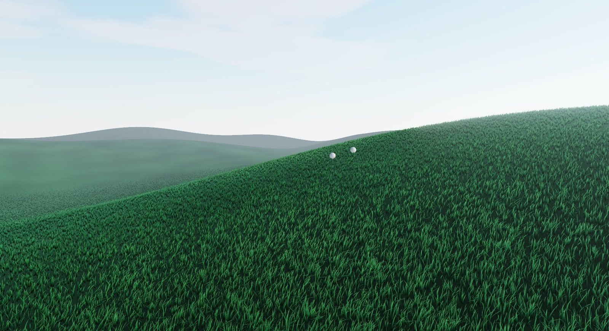

A field guide to infinite grass.
Dense, terrain-aware grass that streams around your camera. Wind, interaction, grass maps and a terrain painter, from one call to Grass.create() or one <Grass />.

Plant it with one call.
Give it your camera, scene, renderer and terrain. Tiles stream in around the camera, LODs thin out the far field, and it updates itself every frame. There's no giant mesh to build and no shader code to write.
import { Grass } from 'threejs-grass' const grass = await Grass.create({ camera, scene, renderer, // WebGPURenderer terrain, // mesh or (x, z) => y tileSize: 25, maxDistance: 200, })
import { Grass } from 'threejs-grass/react' function Field() { const terrain = useRef() return ( <> <mesh ref={terrain} geometry={hills} /> <Grass terrain={terrain} preset="tallFescue" /> </> ) }
npm i github:AskAlice/threejs-grass three Full API reference →Everything a field needs.
Realistic or stylized, a backyard lawn or a savanna that runs to the horizon. Every feature below is live in the demo.
Infinite grass
A field that follows the camera.
The world is cut into tiles that stream in and out around the camera, so grass covers as much ground as you can see without one enormous mesh. Placement is deterministic: leave and come back, and every blade is where you left it.

Built for performance
Hundreds of thousands of blades, in real time.
Each tile is split into cells that hold only as many blades as their distance needs. Blades thin out one by one, tiles are frustum-culled, and rebuilds run on a per-frame time budget, so camera moves stay smooth.

Twelve presets
Real species and stylized worlds.
Start from grass modelled on real species, or from a stylized look, then override any field: height, width, droop, clumping, colours, translucency.

Blades or billboards
Two ways to grow a field.
Geometric blades for close-ups, or billboard tufts (camera-facing cards cut into strands in the shader) to cover huge areas cheaply. Switching is one setting: type: 'billboards'.
blades billboards
billboardsNatural wind
Gusts you can watch roll across.
Scrolling gusts plus a travelling ripple, with tunable direction, strength, noise scale and speed, from a light breeze to a storm. Bent blades catch the light, so the wind is visible.
Interaction
Grass that gets out of the way.
Register characters, vehicles or anything else with an influence radius. Up to 16 objects push blades aside as they move through the field.
Terrain aware
It grows where your ground is.
Pass any mesh or group and it is baked into a heightfield automatically, or pass a height function for procedural, endless worlds. Grass follows slopes and skips ground that is too steep.

Grass maps & painting
Paths, clearings and patterns.
A grass map controls where grass grows and how tall it gets, with naturally tapering edges. Paint it right on your terrain with add, erase, raise and lower brushes, then save it as a PNG.
Four levels of detail
Detail where it counts.
Each LOD sets a distance, a density and a blade geometry. Density interpolates smoothly between them, and remaining blades widen to keep coverage. debugLods shows them while you tune.

Light that feels real
Translucency, sheen and shadows.
Blades glow when back-lit by the sun, pick up a tinted sheen, darken at the roots, cast and receive shadows, and vary in colour across the field.

Made for React too
A declarative <Grass> component.
Every setting is a prop, refs work as terrain and interactors, and the painter is a single prop. Fully typed, with every export documented with three.js and R3F examples.
 React Three Fiber demo
React Three Fiber demoGo touch grass.
Try every feature in the live demos, or go straight to the API reference.